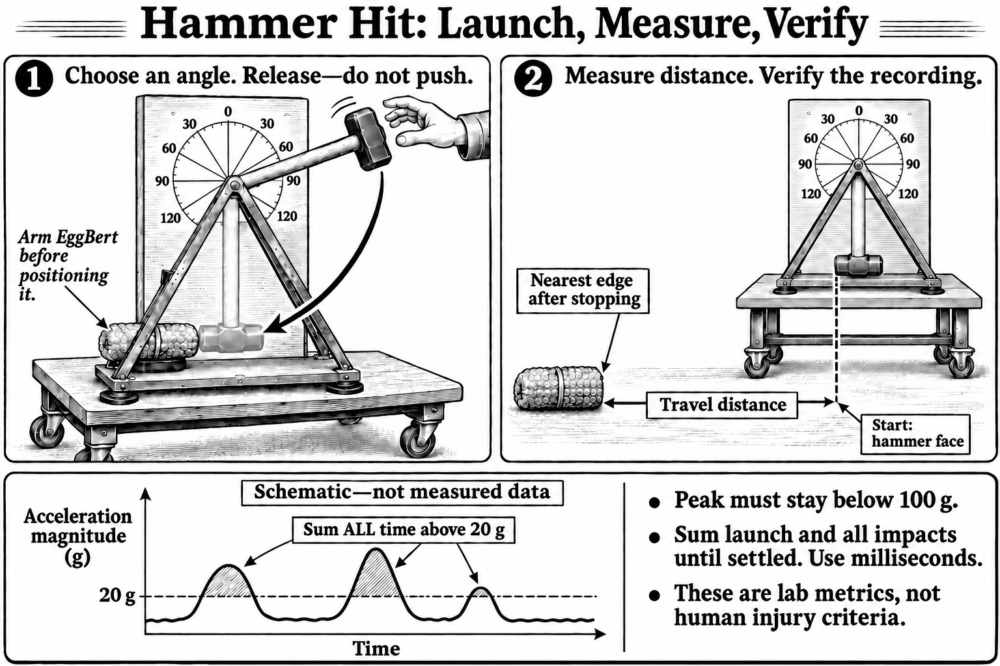

Hammer Hit: Launch, Measure, Verify
Choose a release angle that sends your protected EggBert as far as possible while keeping its peak acceleration below 100 g and limiting its total time above 20 g. The protective construction around EggBert is the vehicle; the apparatus and supporting cart stay fixed.


Launch and measure
- Arm EggBert, then position the protected package at the hammer's striking position. Handle gently once armed.
- Raise the hammer to your chosen release angle. Release it without pushing.
- Let the wrapped EggBert travel and come to rest. Only EggBert and its protective construction move; the test apparatus stays fixed.
- Measure the distance along the floor from the reference aligned with the hammer's striking face at its lowest position to the nearest edge of the wrapped EggBert after it stops. Record distance in meters.
- Download and save the recording. Select Hammer Hit analysis in the Capture Viewer to read MAX g and total time above 20 g.
The first floor-landing peak can exceed the initial hammer-strike peak after EggBert falls about 30 inches from the table. The illustration is schematic, not measured data; actual peaks may be much sharper.
Score and verification
Score = 50 × (dvehicle / 3 m) + 50 × (1 − T>20g / 100 ms)
- dvehicle: the measured distance to the nearest edge, in meters.
- T>20g: sum all time above 20 g through launch and every impact until settled. Use milliseconds, not seconds.
- Peak must stay below 100 g. A peak at or above 100 g makes the score zero.
- The formula is uncapped; do not limit its result to 0–100.
These are lab metrics, not human injury criteria.